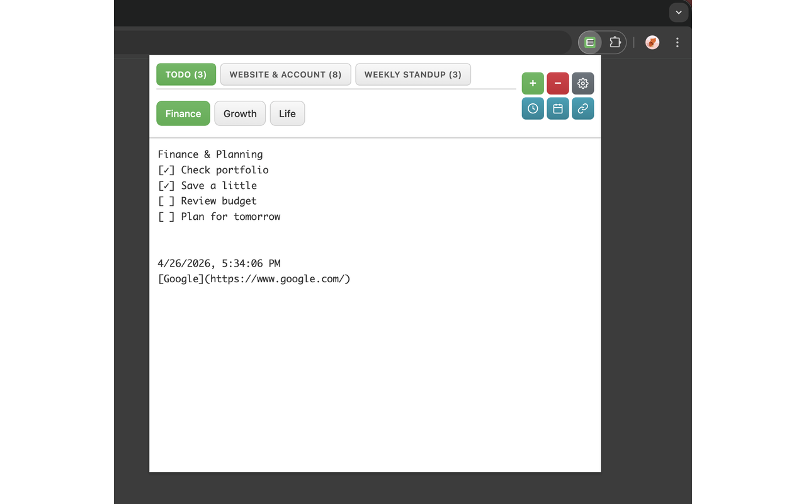
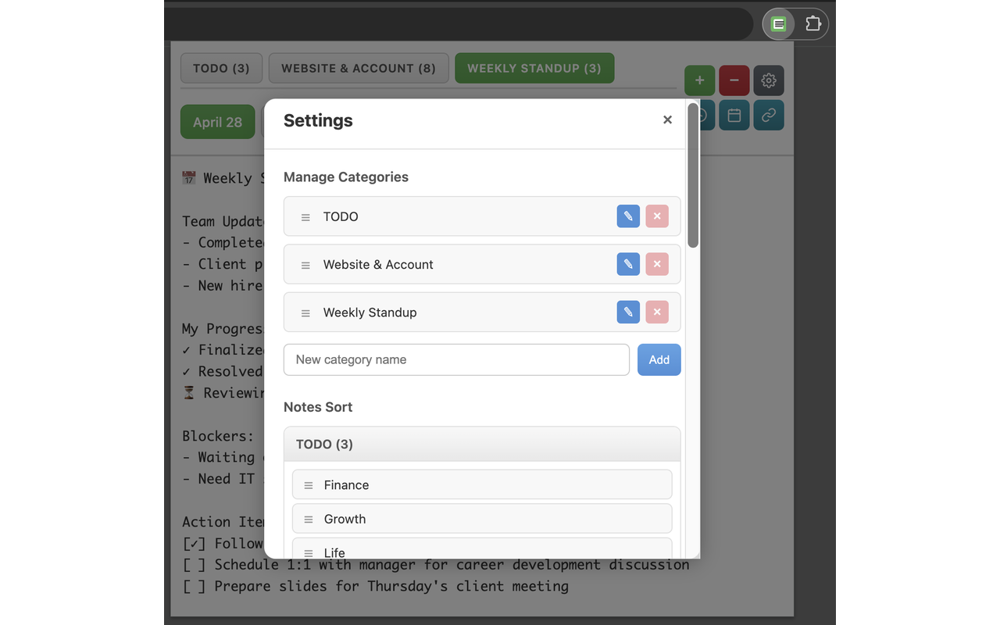
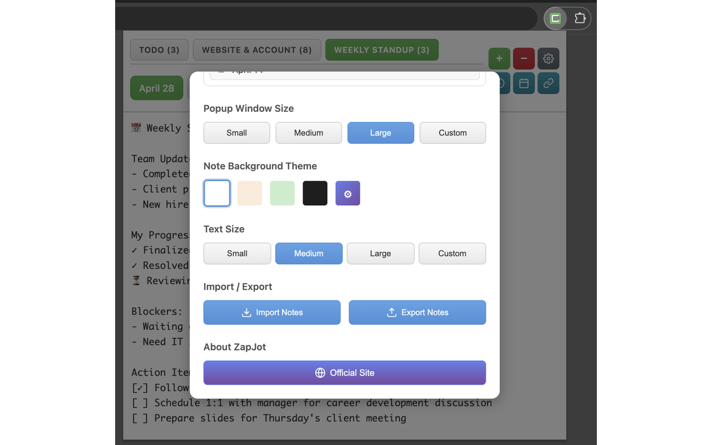
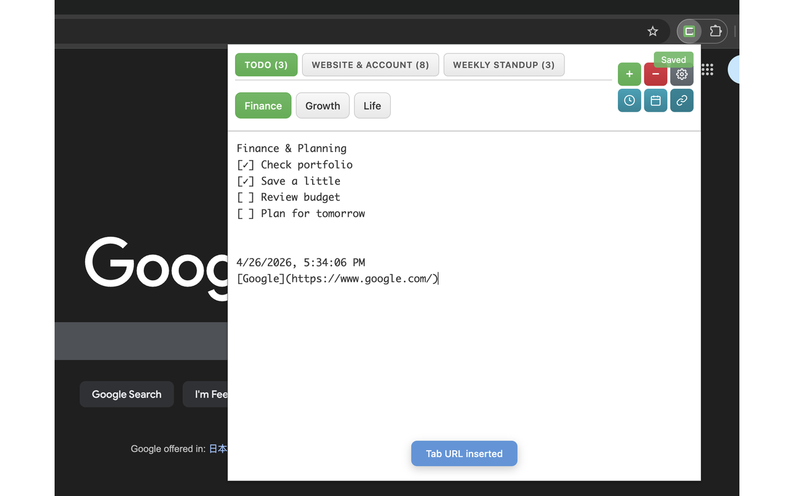

Simple, secure, and always ready. Capture passwords, tags, and quick notes instantly.

Everything you need for efficient note-taking
Organize your notes with multiple tabs. Switch between different notes instantly without losing your place.
Create custom categories to group related notes. Keep your workspace organized and clutter-free.
Give each note a meaningful title. Double-click any tab to set a custom name for easy identification.
Backup and restore your notes easily. Export as TXT files for safekeeping.
Choose from multiple themes (Light, Dark, Warm, Green), set custom background images, and adjust window size to your preference.
One click away from your notes. Access ZapJot from anywhere in Chrome with a single click.
Clean, intuitive interface designed for productivity

Organized tabs with custom categories

Multiple themes to match your style

Efficient date, time and URL insertion
Join thousands of users who trust ZapJot for their daily note-taking needs
✓ Free to use
✓ No account required
✓ Your data stays local
Yes! ZapJot is completely free to use. There are no hidden fees or premium features.
Your notes are stored locally in Chrome's storage. They never leave your computer, ensuring complete privacy and security.
Absolutely! You can export your notes as TXT files or JSON format. This makes it easy to backup and restore your data.
Yes! Once installed, ZapJot works completely offline. You don't need an internet connection to create or view your notes.
You can organize notes using categories and custom titles. Create categories in settings, assign notes to them, and give each note a meaningful title by double-clicking the tab.